Traversal T0 — scènes de route & coffre
Revue du rendu Chromium : les lieux narratifs occupent une section complète de route, avec une chaussée toujours lisible. Nouveau coffre fermé/ouvert assorti au décor. L’ambuscade conserve sa composition et ses assets.
T0 uniquementProduction désactivéeNon commité / non poussé
Rapport complet, 16 points · Provenance des assets · Scène de contrôle déterministe · Parcours réel DEV
Déplacement → rencontre → retour → carrefour → reprise
Extraits du vrai parcours Chromium à vitesse réelle. Une coupe retire la conduite entre la rencontre et le carrefour. Enregistrement intégral · Origine et minutage
Présence des événements
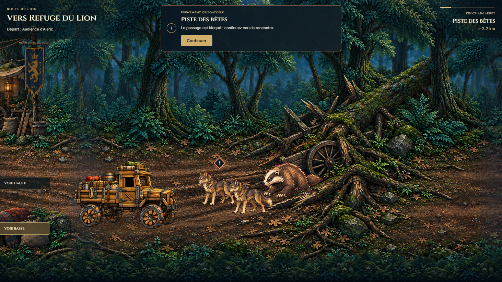
Ambuscade obligatoireComposition acceptée préservée. Continuer, sans évitement.
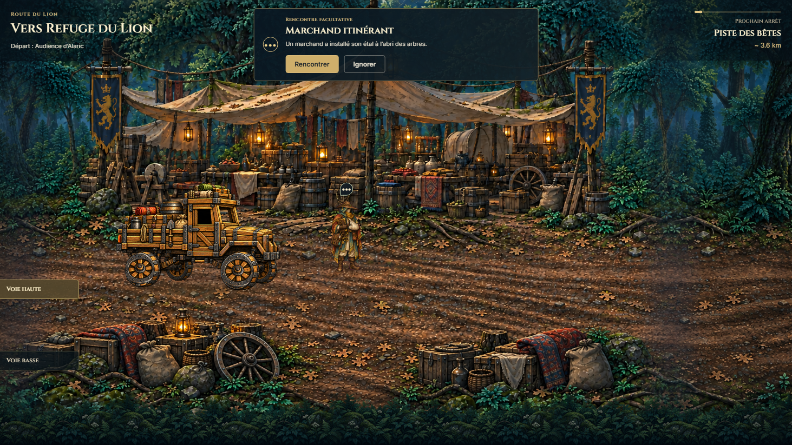
Halte du marchandÉtals, toiles, enseignes et bagages au premier plan.
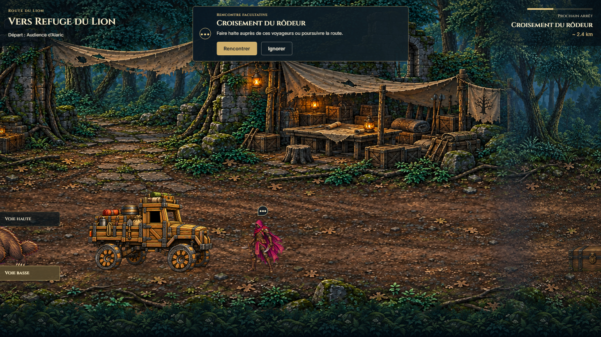
Halte de CédricRuines, abri et table : une scène intégrée avant le choix.
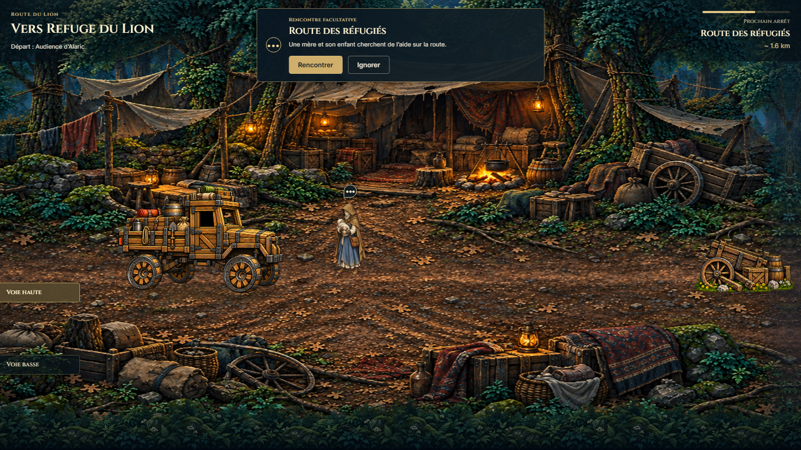
Camp des réfugiésTentes, feu et effets personnels encadrent les deux voies.
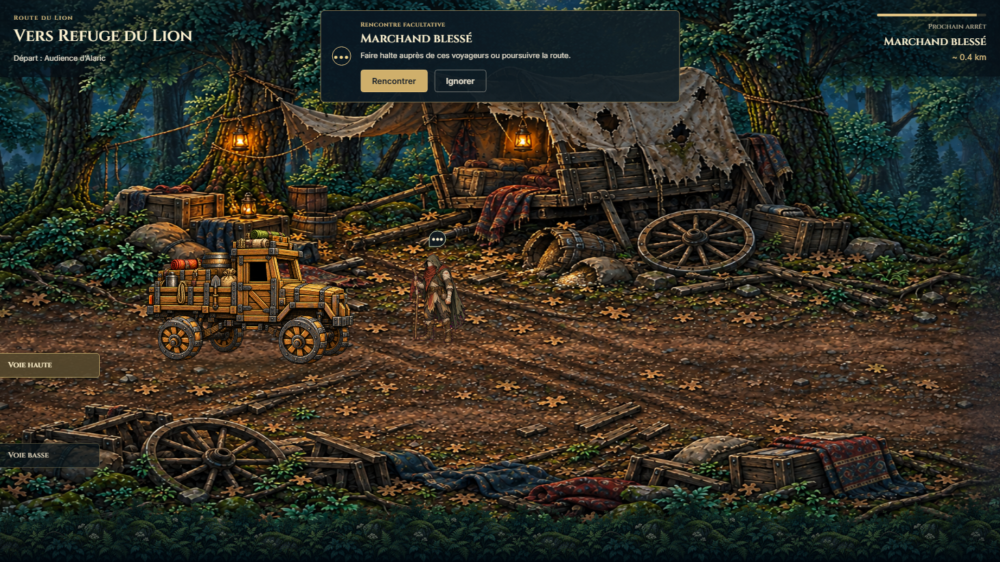
Caravane endommagéeDécor de la branche narrative canonique.
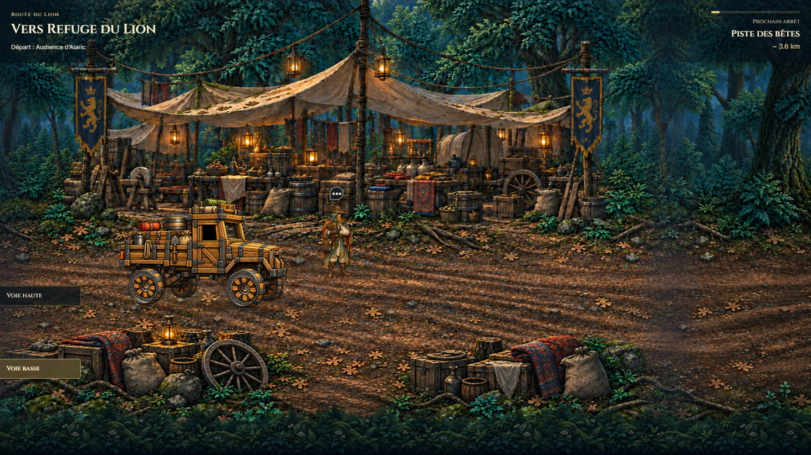
Ignorer reste un passage physiqueActeur et décor partagent le même déplacement ; le contournement est enregistré après dépassement.
Coffre, proportions et voies
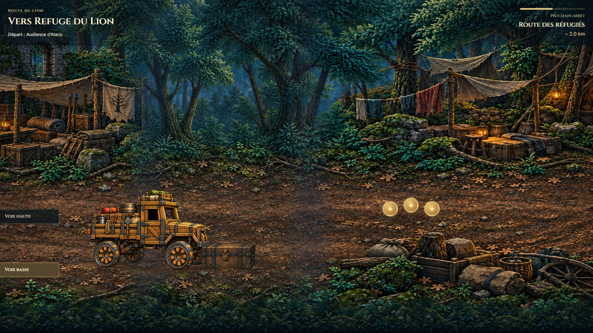
Coffre ferméBois et fer patinés ; silhouette à 34 % de la hauteur visible du camion.
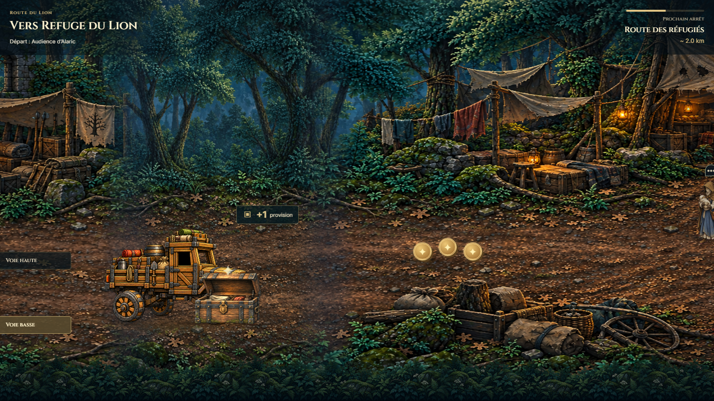
Coffre ouvert au contactVrai état peint, +1 provision, aucune pause ni fenêtre.
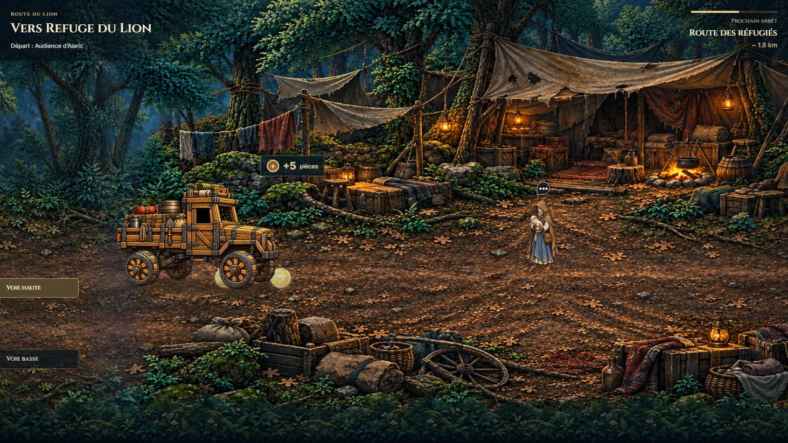
Collecte d’or en roulantPetit motif de pièces et retour +5.
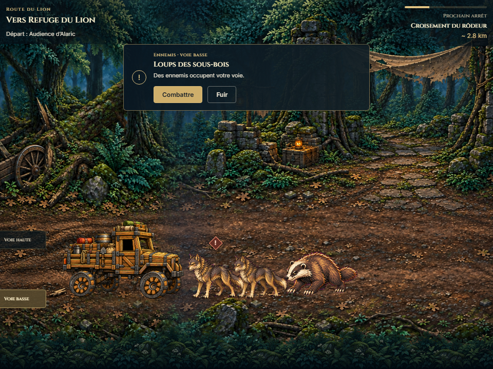
Camion / ennemisCréatures à 58 %, menace de voie avec Combattre / Fuir.
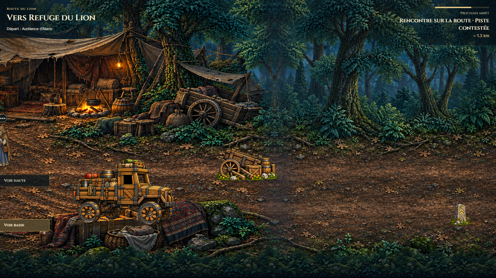
Camion / obstacleDébris à 49 %, évités par changement de voie.
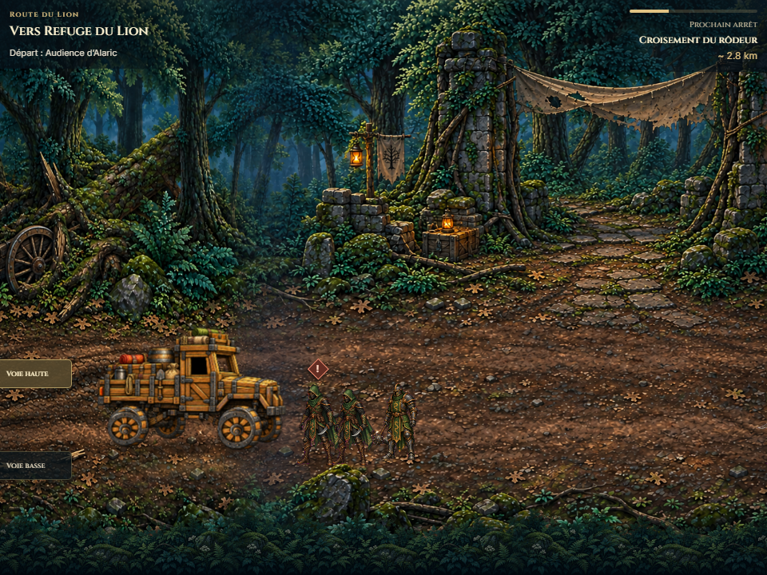
Fuite physiqueChangement de voie assisté, ennemis toujours présents.
Carrefour et fin de trajet
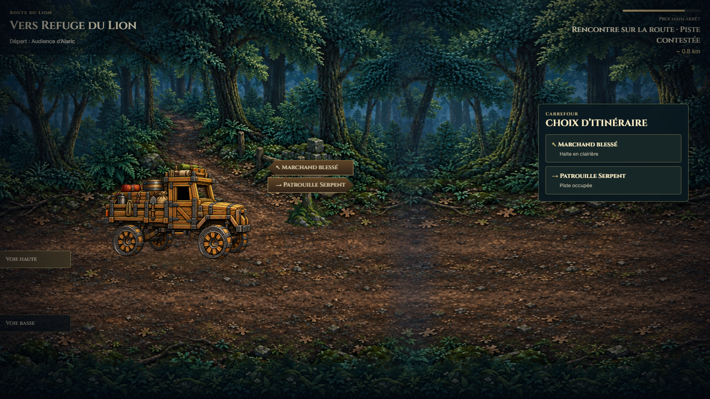
Choix directPanneau physique, noms issus du RunSystem, interface compacte.
 Validation sous couverture complèteOpacité mesurée à 1 lors du changement de branche.
Validation sous couverture complèteOpacité mesurée à 1 lors du changement de branche.
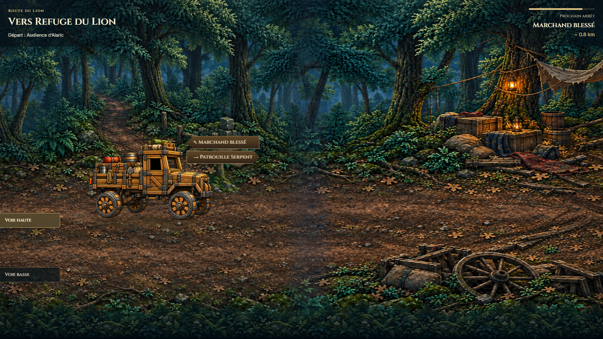
Reprise automatiqueMême trajet latéral, variante choisie.
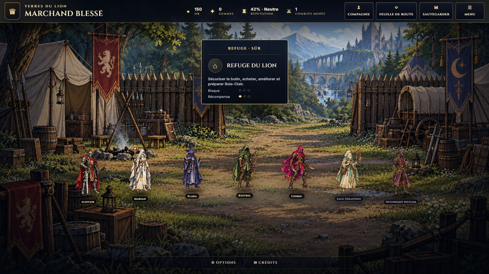
Retour à Travel ViewLa destination canonique reste à confirmer dans Travel View.
Rapports bruts et limites de validation
Rencontrer / Combattre · Ignorer / Fuir · Éviter · Contacts · Cas ciblés · Build production
Les combats sont terminés avec le contrôle de victoire QA existant : validation des entrées, sorties et autorités, pas de l’équilibrage. Les contrôles ciblés utilisent une horloge déterministe ; la vidéo provient de l’application réelle. Les récompenses des petits objets restent locales à l’aperçu. Validation visuelle opérateur avant tout commit.